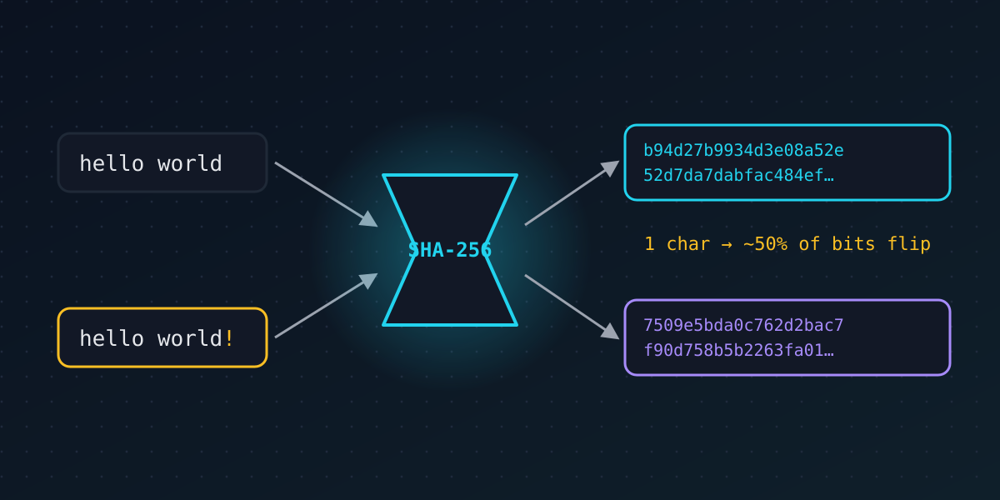

// cryptography basics · 6 min read
Hashing, explained: the fingerprint of data
Published Nov 11, 2026

If cryptography had a utility knife, it would be the hash function. It quietly protects your passwords, checks your software downloads, names every commit in Git and holds blockchains together. Yet the idea is simple enough to explain in a sentence.
What a hash function does
A hash function takes any input (a word, a file, a whole film) and produces a short, fixed-size output called a hash or digest. The most widely used today, SHA-256, always outputs 256 bits, usually written as 64 hexadecimal characters:
SHA-256("hello world") = b94d27b9934d3e08…
Think of it as a fingerprint. It's tiny compared with the original, it identifies the data, and you can't rebuild a person from their fingerprint.
The five properties that matter
- Deterministic: the same input always gives the same hash.
- Fast to compute: hashing a large file takes a fraction of a second.
- One-way (preimage resistance): given a hash, there's no practical way to find an input that produces it, other than guessing.
- Collision resistant: it's practically impossible to find two different inputs with the same hash, even though such pairs must exist mathematically.
- Avalanche effect: change a single character and about half the output bits flip. Similar inputs give totally unrelated hashes.
Where you use hashes every day
- Checking downloads. Software sites publish the SHA-256 of their installers. If your downloaded file hashes to the same value, not one bit was changed along the way.
- Storing passwords. Good websites never store your password, only a hash of it. When you log in, they hash what you typed and compare. Each password gets a random salt first, so identical passwords produce different hashes, and they use deliberately slow hashes such as Argon2, scrypt or bcrypt to make mass guessing expensive.
- Git. Every commit, file and folder in a Git repository is named by its hash. Change history and every later hash changes too, which is what makes tampering obvious.
- Digital signatures. Signing a large document directly would be slow, so systems sign its hash instead.
- Blockchains. Each block contains the hash of the previous one, and proof-of-work mining is a race to find an input whose hash starts with enough zeros.
When hash functions break
Hash functions don't last forever. MD5 collisions have been easy to produce since the mid-2000s, and in 2017 researchers published the first real SHA-1 collision: two different PDF files with the same hash. Both are now considered broken for security use. SHA-256 and the newer SHA-3 family remain strong.
What about quantum computers? Grover's algorithm speeds up brute-force searching, but only by a square root. That weakens hashes far less than it weakens RSA, so SHA-256 and SHA-3 are still considered safe, and the post-quantum signature standard SLH-DSA is built entirely from hash functions.
The takeaway
A hash is a small, unforgeable fingerprint of any data. That simple tool gives you integrity checks, safer password storage and tamper-evident history. In the lab you can watch the avalanche effect happen and mine your own proof-of-work hash.